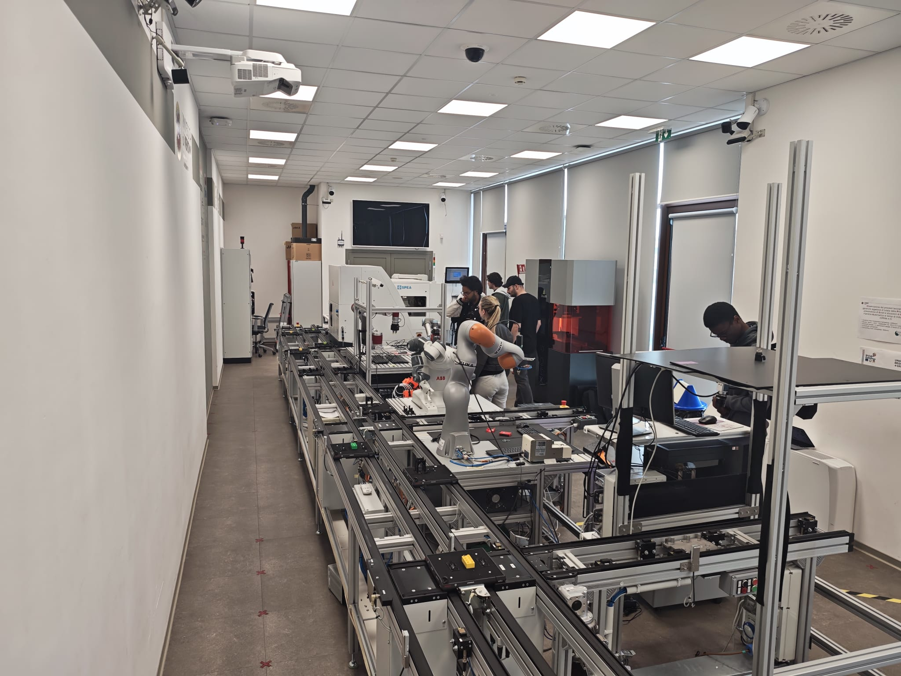
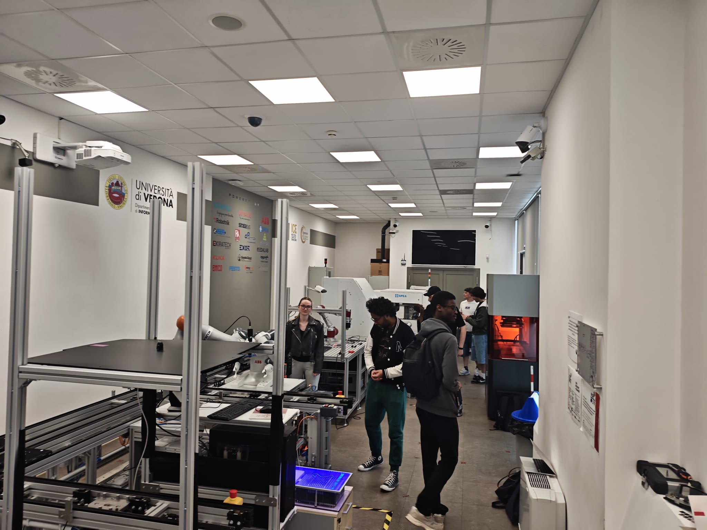

Students interactively plan and optimise robot arm trajectories inside a VR digital twin of the ICE Lab, with real-time manipulability visualisation and a ROS-powered computational backend, making abstract kinematic concepts tangible and safe to explore.
Robotic trajectory planning and manipulability are notoriously difficult to teach in a traditional classroom: the mathematics is abstract, and access to a live robot for safe experimentation is constrained by safety, time, and equipment availability.
ICETeachXR Educational Scenario 2, designed for the "Robotics, Vision and AI" course taught by Prof. Francesco Setti and Prof. Riccardo Muradore, places students directly in front of a virtual JAKA ZU 5 6-DoF robotic manipulator. They interactively define target poses, observe computed trajectories, and explore how path choices affect manipulability and safety, with instant visual feedback and no risk to equipment or personnel.
The application runs in standalone VR on Meta Quest 3, with an optional AR passthrough mode that overlays the virtual robot and trajectory visualisation onto the physical lab environment.
A real collaborative manipulator in the ICE Lab, reproduced in the virtual twin with full CAD-based fidelity.
3D visual overlays show kinematic performance at every step of a planned trajectory in real time.
Accurate inverse kinematics and time-parametrised motion computed by an external ROS server using URDF robot models.
The entire scenario takes place in the pre-execution planning phase: students learn by designing safe paths, not by running the robot live.
A 5-minute presentation introduces basic commands, how the system computes trajectories for a 6-DoF robot across the full joint space, trajectory analysis based on manipulability ellipsoids, and fundamentals of inverse kinematics.
Students put on a Meta Quest 3 headset and are positioned in front of the JAKA ZU 5 robotic arm inside the virtual ICE Lab. Spatial guidance immediately highlights invalid zones: singularities near the robot's base, intersections with the worktable, and areas exceeding maximum reach.
The student moves a virtual target through 3D space using gestural interaction. The system provides real-time spatial guidance, flagging invalid configurations before a trajectory is committed. Once a valid pose is selected, the student requests trajectory computation from the ROS backend.
Before any robot motion, the system overlays manipulability ellipsoids along the proposed path, dynamically scaling, orienting, and colour-shifting from red to green to indicate kinematic performance at each step. A real-time metrics panel displays average manipulability, joint margin, peak velocity, and torque magnitude.
Students iterate freely: adjust the target pose, re-plan the path, and observe how the manipulability indicators change. A built-in scorecard compares the current trajectory against a baseline, encouraging students to optimise safety and performance metrics through guided discovery.


Dynamic 3D ellipsoids overlaid on the robot trajectory, aligned to end-effector task space. Size and shape encode kinematic dexterity; a colour-coded scalar index indicates proximity to singularity conditions; principal-direction arrows show preferred motion directions.
The VR environment communicates with an external ROS server powered by accurate URDF models of the JAKA ZU 5. Inverse kinematics and time-parametrised trajectory generation provide immediate visual feedback on any pose the student requests.
Virtual fences and clearance overlays mark workspace zones and highlight risks of self-collision and obstacles. The closest-pair link minimum distance is shown, making abstract safety margins spatially intuitive.
A floating billboard panel displays real-time values: average manipulability, joint margin, fence clearance, peak velocity, and torque magnitude. Students see the numbers and the visual simultaneously, reinforcing the link between theory and physical reality.
The scenario runs in standalone VR on Meta Quest 3 standalone or connected to PC. An optional AR passthrough mode overlays the virtual robot and trajectory visualisation directly onto the physical ICE Lab environment, blending digital learning with physical context.
A scorecard compares the current trajectory against a baseline using the metrics already visible in the real-time panel, encouraging students to refine their paths through guided discovery rather than direct instruction.
Explore the underlying digital twin technology or find out how ICETeachXR can be adapted to your context.